| Tipos | Treinos | Skills |
A palavra calistenia vem do grego "kallos", que significa beleza, e "sthenos", que significa força.
Consiste em um conjunto de exercícios/movimentos que utilizam se do peso do próprio corpo.
Popularmente, a calistenia é conhecida pelas áreas de freestyle, que são um conjunto de movimentos acrobáticos com foco em beleza e impressões.
A área de powerlifting, onde as pessoas acrescem peso aos movimentos, dos básicos aos avançados.
A consciência corporal, flexibilidade (mais puxado para um pilates) e apenas musculação.
Também é amplamente conhecido como uma arte de rua, tal qual o break, o grafiti, skatismo, entre outras modalidades.

Uma Rotina de treino organizada pode ser feita de 2 maneiras, ou diferentes dias para diferentes músculos,
ou uma rotina de vários músculos em 1 dia, se repetindo. um exemplo de treino para iniciantes
FullBody
(todos os músculos).
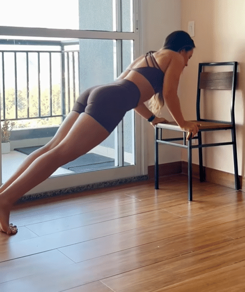
Segue uma Lista de treino para atletas de nível intermediário, que dominam os exercícios simples e
e já conseguem ter pegada, flexibilidade e força suficientes para realizar movimentos com progressão como:
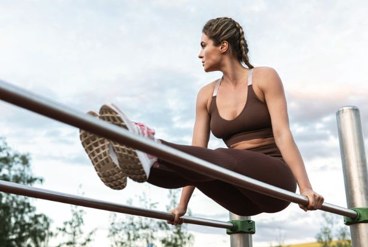
Treinos Avançados, Ao contrário dos intermediários (Que São só variações mais Difíceis Dos Exercícios Iniciantes)
São compostos por exercícios que exigem quantidades absurdas de força, equilíbrio e pegada. é muito importante
mencionar que não se deve tentar realiza-los tão cedo, nem com tanto volume, pois podem ser altamente lesivos.
Dica
: treino e domínio de músculos como antebraços, escápulas, abdômen, e outros grupos maiores serão grandes aliados.
Aviso
: Apartir desse ponto, cada exercício aqui precisa de um treino específico, sofrendo por um lento e contínuo
Processo De "Desbloqueio".

OBSERVAÇÃO : Existem outros tipos de variações e exercícios, A ficha de treino é Uma Sugestão.
| Nome Do Exercício | Músculo Trabalhado | Imagens |
| Flexão de Braço | Peito (Ombro, Tríceps) | 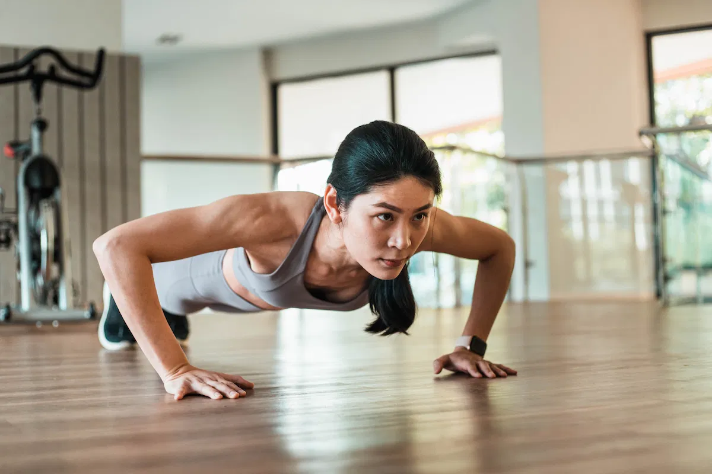 |
| Agachamento com Panturrilha | Perna, Panturrilha | 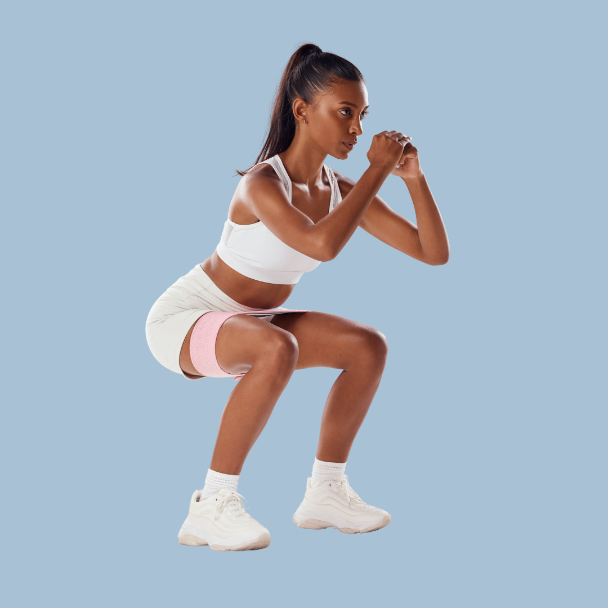 |
| Pendurar na Barra | Costas (Braço) | 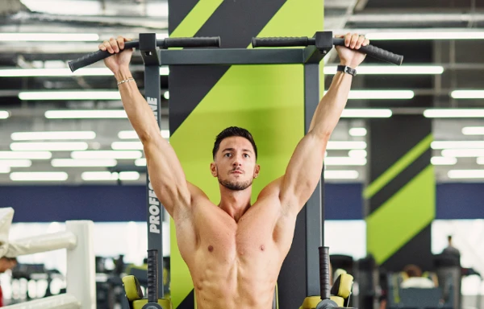 |
| Tríceps Mergulho | Tríceps | 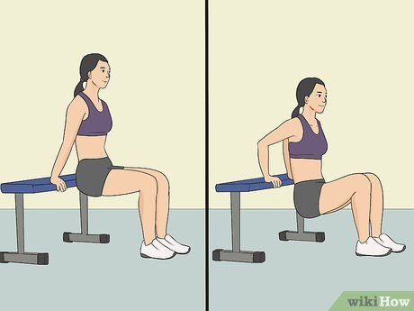 |
| Abdominal Padrão | Abdômen | 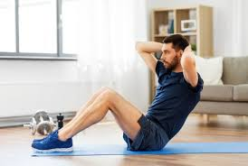 |
| Prancha Canoinha | Abdômen (Core) | 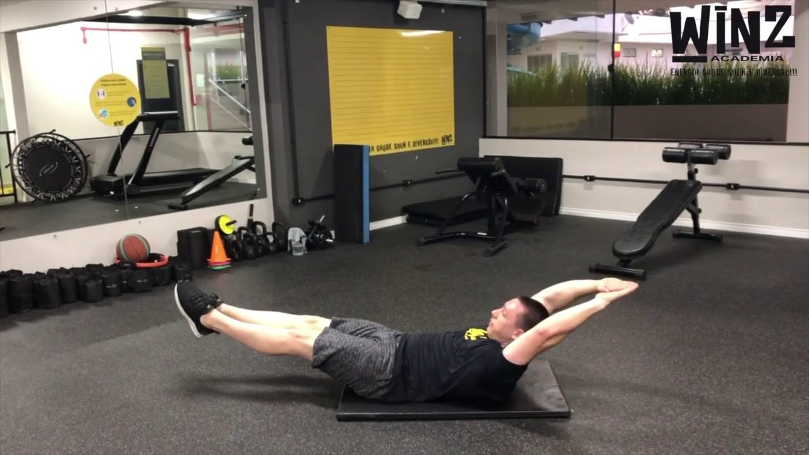 |
| Handstand com Apoio | Ombros | 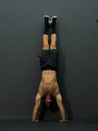 |
| Flexão Arqueada | Peito | 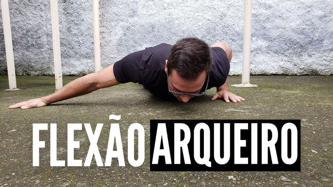 |
| Flexão Declinada | Peito Superior | 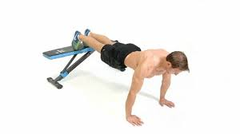 |
| Agachamento Pistol | Pernas | 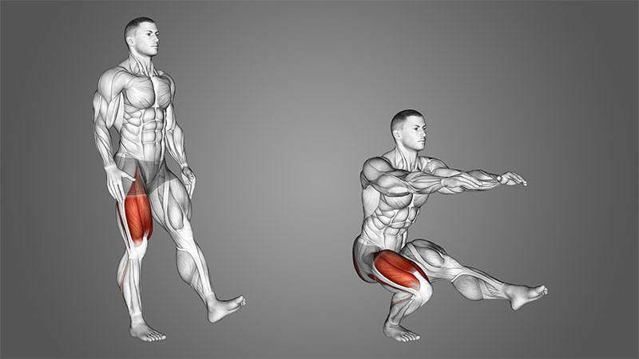 |
| Barra Fixa | Costas / Bíceps | |
| Mergulhos Paralelos | Peito / Tríceps | 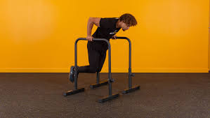 |
| Mergulhos Retos | Tríceps | 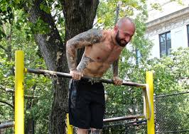 |
| Abdômen Elevação de Perna tipo Crunch | Abdômen Inferior | 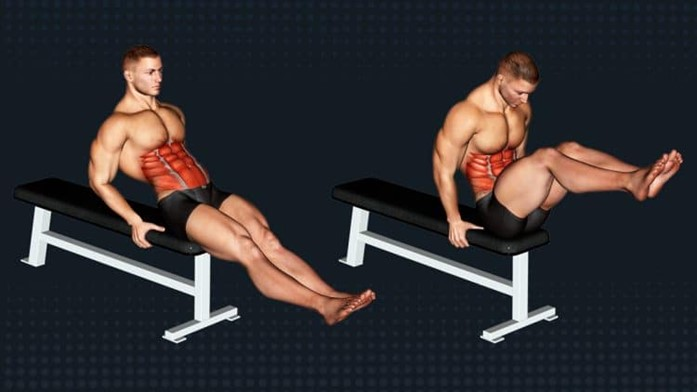 |
| L-Sit | Abdômen / Flexores de Quadril | 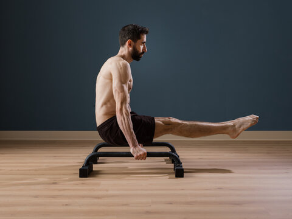 |
| Handstand Padrão | Ombros / Equilíbrio | 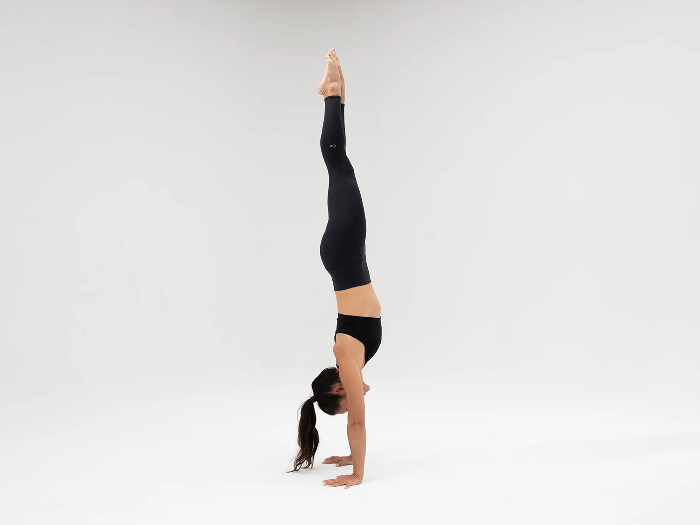 |
| Flexão um braço | Peito / Core | 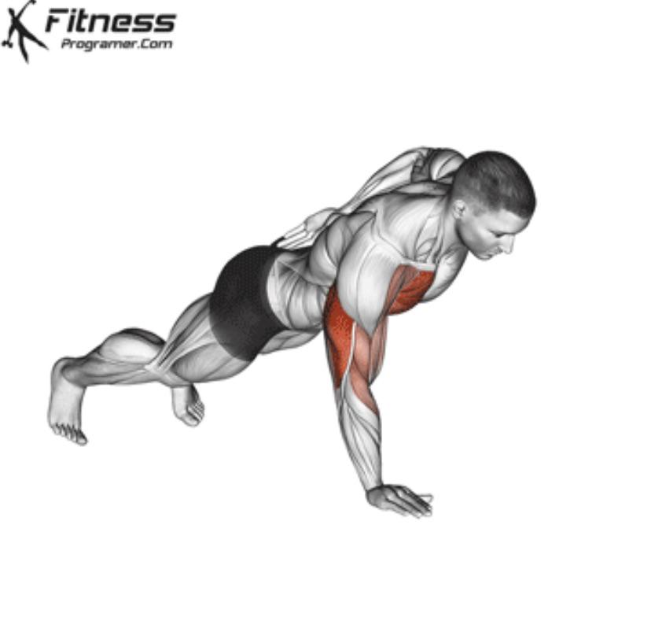 |
| Flexão Handstand | Ombros | 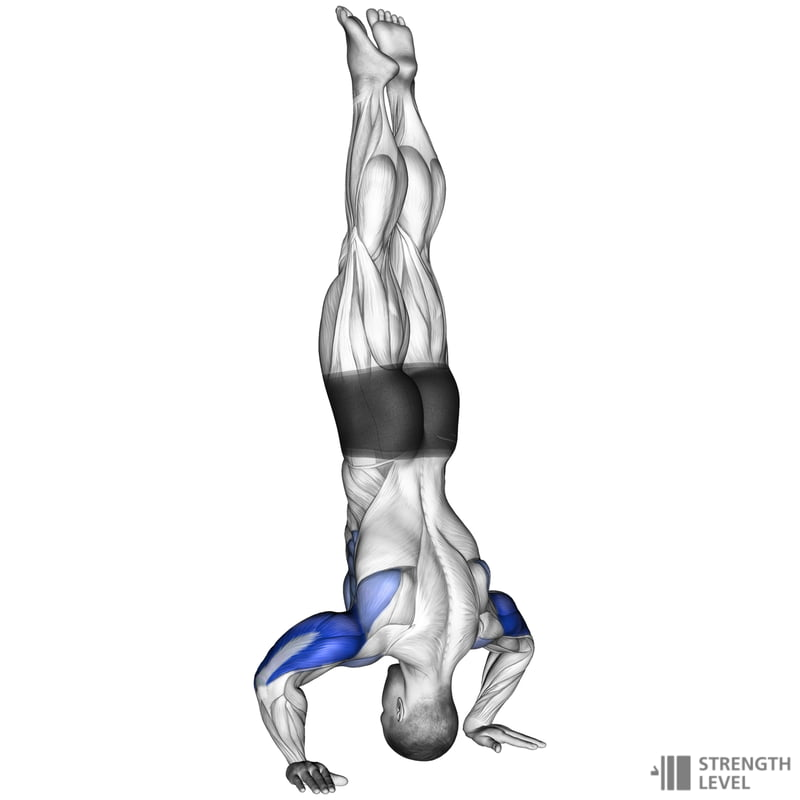 |
| Pistol passada com altura | Pernas | 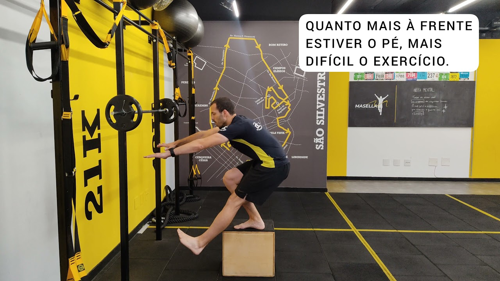 |
| Barra explosiva | Costas / Explosão | 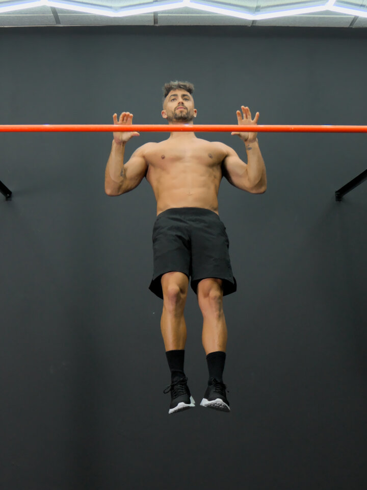 |
| Muscle Up | Costas / Peito / Tríceps | 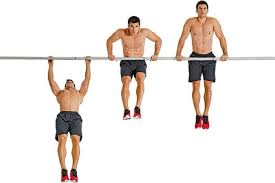 |
| L-Sit para Handstand na paralela | Ombros / Core / Tríceps | 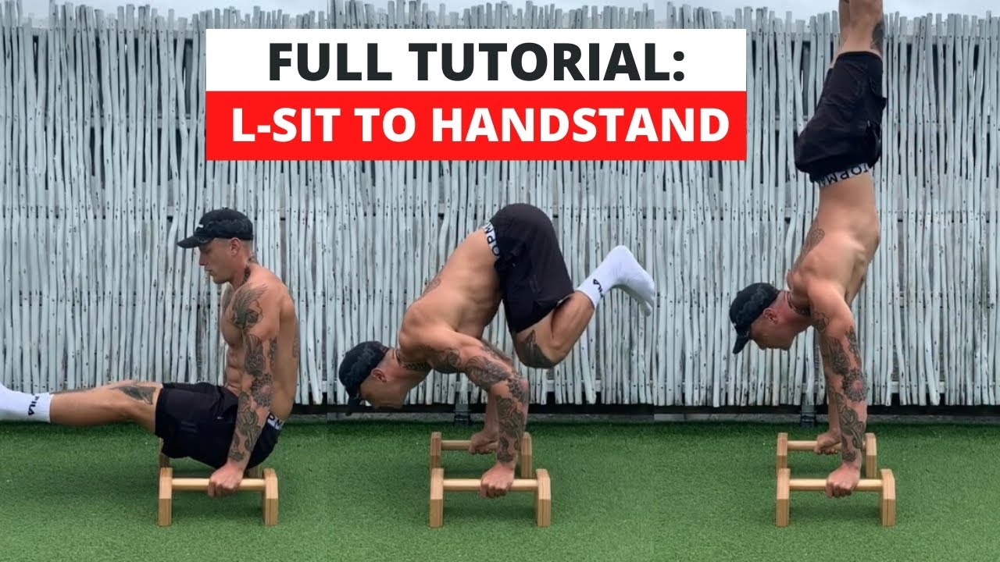 |
| Full Planche | Ombros / Lombar / Core | 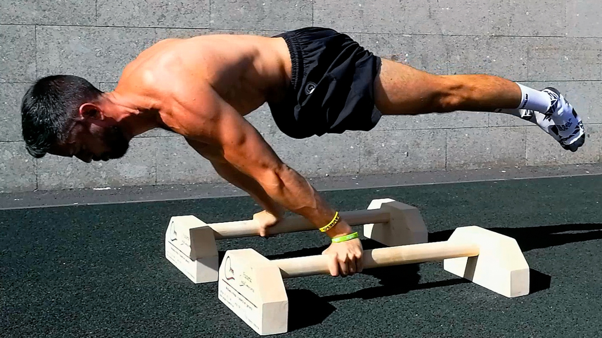 |
| Handstand uma mão (pegada fechada) | Equilíbrio / Ombros |
Um Formulário Que Te Ajuda A Definir Seu Nível
1 - Quantos Flexões Você é capaz de fazer, em seguida?
2 - Você É Capaz De Fazer Barra Fixa? Se Sim, Quantas?
3 - Quantos Agachamentos Você Consegue Executar De Uma Só Vez, Com Uma Boa Amplitude?
4 - Qual Sua Experiência No Ramo De Musculação/Esporte?
5 - Quantos Abdominais Você Consegue Fazer De Uma Vez, Com Boa Amplitude?
6 - Qual Seu Peso?
7 - Qual Sua Altura?